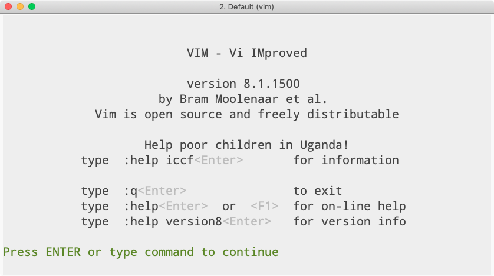

Don't buy me a coffee
2 min readtl;dr I don’t get paid to maintain poppr anymore and do so on my own time, so if you use it and value the work that I put into it, please donate to RAICES Texas (https://www.raicestexas.org/donate) to help provide legal services to underserved immigrant and refugee families in the United States.
Last Tuesday, I released poppr version 2.8.3, which fixed a corner case in
read.genalex() and enhanced
minimum spanning network rendering by drawing single-population nodes as
circles instead of pies (with
contribution by Frédéric Chevalier). This version also comes with fixes for
mistakes that past Zhian made (such as using the <<-
operator
and searching for user objects in the global environment1). The last issue
had me sitting at my laptop off and on over the weekend trying to get things to
work.
This last week, I realized that I’ve been maintaining poppr on a voluntary basis since April 2018.2 This spans all of the poppr releases from version 2.8.0 onwards. Some, releases—like poppr version 2.8.2—took almost no effort to release3, but others, like poppr version 2.8.0 and poppr version 2.8.3 took several days of problem solving to actually get right.
So, yeah, it takes time to maintain a relatively well-used package, and people should be paid for their time, but I already have a job that keeps me fed, clothed, and housed4. It’s not uncommon for open source developers to have a digital tip jar on their project page for a little bit of support, but that’s not really my style since I don’t really need anyone to chip in a couple of bucks to buy me a coffee or a beer. What is more up my alley is the concept of charityware, which encourages users of software to donate to charities instead of sending monetary support to the author (the vim text editor is a well-known example of this).

So, that being said, if you use poppr, and you want to support it’s development, then please donate to the Refugee and Immigrant Center for Education and Legal Services (RAICES: https://www.raicestexas.org/donate).
- not together, though [return]
- Poppr was the subject of my Ph. D. dissertation, and I had a small line of funding during my first postdoc in the Everhart lab to maintain it. [return]
- This is in part due to CRAN’s volunteer work in automating the pipeline from submission to acceptance of package updates. [return]
- In London of all places! [return]